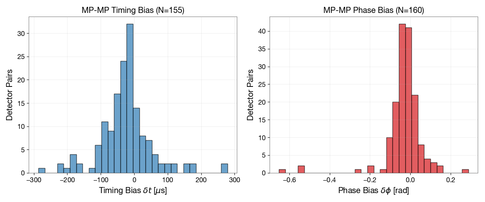
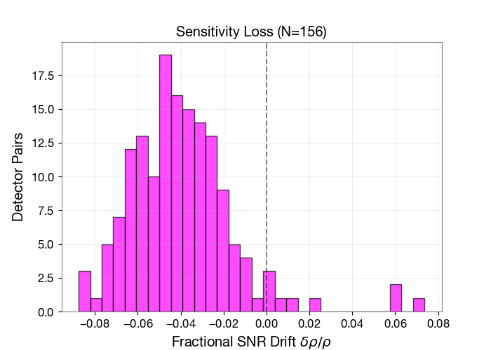
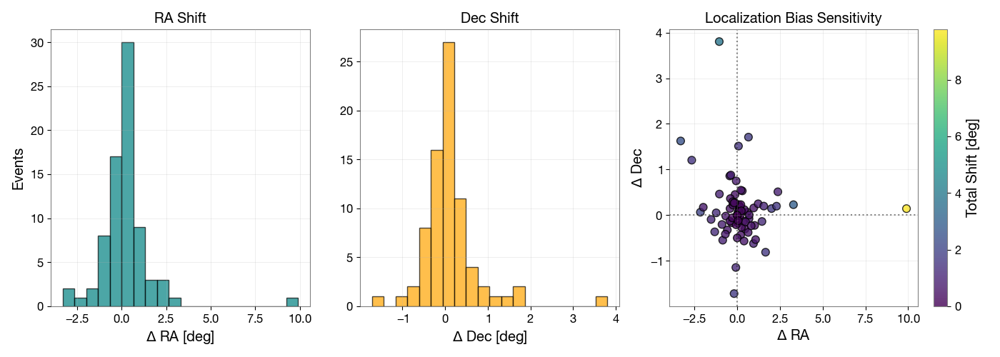

New Paper: Mitigating PSD Drift in Zero-Latency GW Searches
The Problem: Noise Drift in Real-Time Searches
To enable multi-messenger astronomy, gravitational-wave pipelines must generate zero-latency alerts to catch the early optical counterparts of mergers. This requires matched-filtering strain data against theoretical templates using a “lagged” estimate of the detector’s Power Spectral Density (PSD).
However, detector noise fluctuates continuously. This spectral drift creates a mismatch that warps the matched-filter metric, severely biasing timing estimates and degrading sky-localization.
The Solution: Dual Cutler-Vallisneri Corrections
Building on low-latency methods by Tsukada et al. [1], we generalized the classic Cutler-Vallisneri formalism to compute metric shifts caused specifically by PSD drift.
The result is a set of analytic, causal, and computationally cheap corrections for the timing and phase biases. These first-order corrections for timing (\(\delta t^{(1)}\)) and phase (\(\delta \phi^{(1)}\)) are power-weighted spectral averages of the whitening phase mismatch:
\[ \delta t^{(1)} = \frac{\int (2\pi f) \Phi_a(f) w(f) df}{\int (2\pi f)^2 w(f) df}, \quad \delta \phi^{(1)} = \frac{\int \Phi_a(f) w(f) df}{\int w(f) df} \]
Here, \(\Phi_a(f)\) is the whitening phase perturbation induced by the drift, and \(w(f)\) is the whitened signal power.

Validation and Impact
We validated this framework using real GWTC-4.0 strain data. As seen above, uncorrected 1-week PSD drift can induce severe systematics. Beyond coordinate shifts, this drift also directly suppresses the recovered signal amplitude.

Applying our mathematical framework successfully restores these parameters. Crucially, this eliminates the artificial broadening of early-warning sky maps, ensuring rapid alerts remain highly accurate for telescopes hunting for electromagnetic counterparts.

For the complete derivation, see the full paper [2].